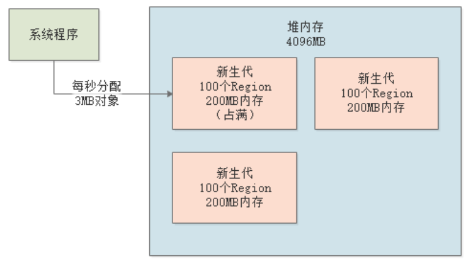

本章和下一章，我们将通过一个实际案例来讲解如何针对G1进行JVM参数调优。G1的优化思想和“ParNew+CMS”是类似的，我们将通过案例，按照G1的垃圾回收过程，逐步优化。
还是先来看下案例的背景，把整个系统的核心业务流程、峰值流量、内存使用模型梳理清楚。
假设现在有一个在线教育平台，日活用户几十万，其核心业务流程就是：用户浏览 -> 选择课程 -> 下单付费 -> 选课排课。这样一个流程，几乎没什么并发度，这种在线教育系统，高峰期一般在晚上的2~3个小时内，占据全天流量的99%，此时几十万用户会在这集中的2-3个小时内进行在线学习。
交代完了背景，我们再来估算下高峰时期的系统内存使用模型：
我们假设有60万用户会在晚间3个小时内集中访问系统，那么就是每小时20万用户。这20万用户每人每分钟会在平台上进行1次互动操作，那么20万用户1小时内总共进行1200万次互动操作，平均每秒大概3000次互动操作。
也就是说，我们的在线教育系统需要能够承载每秒3000次并发请求。根据经验，4核8G的机器抗个每秒600并发请求没有问题，所以我们一共部署5台4核8G的机器。
我们假设一次请求产生的对象大小为5KB，那一秒钟600次请求总共产生3MB对象，一分钟就是18MB对象。
我们先来看下G1的初始内存布局，采用4核8G的机器，给Java堆空间分配4G内存，其中新生代初始占比5%（200MB），最大60%，每个Java线程的栈内存占1MB，元数据区（永久代）的内存为256MB，如下图：
预期停顿时间，我们采用默认值200ms，即希望每次触发GC时，系统停顿时间不超过200ms，可以通过参数-XX:MaxGCPauseMills设置。
此时，JVM的参数配置如下：
-Xms:4096M -Xmx:4096M -Xss1M -XX:PermSize=256M -XX:MaxPermSize=256M -XX:UseG1GC -XX:G1NewSizePercent=5 -XX:G1MaxNewSizePercent=60 -XXMaxGCPauseMills=200
-XX:G1NewSizePercent用来设置新生代的初始占比， -XX:G1MaxNewSizePercent用来设置新生代的最大占比。初始状态下，每个Resion为2MB，新生代一共100个Region。
系统运行后，会不断的在新生代的Eden区分配对象，按照之前的计算，每秒分配3MB对象，那么1分钟左右就会将塞满100个Region，大约200MB：
新生代的大小是在5%~60%之间动态变化的，那是否直到新生代占据了60%的Region后，才会触发新生代的GC？
显然不是的，G1的新生代GC触发机制如下：随着新生代Region的不断分配，G1会动态监测每个Region的回收价值，当它发现新生代的某些Region的总回收时间差不多接近预期停顿时间时，就会触发一次新生代GC。
举个例子，假设上述的在线教育系统，G1回收掉300个Region需要200ms，接近“预期停顿时间”。那么当最初的100个Region占满后，G1会判断，如果此时进行回收仅需要几十ms，远小于200ms，新生代频繁GC是不好的，还不如再等会儿，于是会给新生代再增加些Region，然后继续在里面分配对象：

然后系统继续运行，直到300Region都快占满了，此时GC评估下总体回收时间，接近200ms，那么这个时候就可能触发一次新生代的GC，从而保证了GC时间在“预期停顿时间”范围内。
事实上，G1到底会分配多少Region给新生代，多久触发一次新生代GC，每次GC耗费多长时间，这些都是不确定的，必须通过一些工具去查看系统实际运行情况才能知道，这块我们后续实战篇中会进行讲解。
G1是非常适合大内存的机器的，所以应该给JVM分配足够的Java堆内存，然后设置合理的预期停顿时间。
-XX:MaxGCPauseMills这个参数设置太小，就会导致G1对新生代进行频繁GC，虽然每次GC的停顿时间很短。如果这个参数设置太大，那么G1会等到积累了很多对象后一次性回收，此时一次新生代GC的停顿时间可能达到几百毫秒，但是GC的频率很低。
所以，-XX:MaxGCPauseMills参数的设置，需要结合系统压测工具、GC日志、内存分析工具综合考虑，既然保证系统的GC频率不会太高，也要保证每次GC的停顿时间不会太长。后续实战篇，我们会详解具体分析的方法。
当老年代的Region数量达到堆内存的45%时（通过参数-XX:InitiatingHeapOccupancyPercent可以配置），会触发一次混合回收（Mixed GC），即对新生代和老年代一起回收。
我们之前已经讲解过了G1中对象进入老年代的几个条件：
-XX:MaxTenuringThrehold参数设置）；所以，对于Mixed GC的优化，核心思路还是尽量减少对象进入老年代。优化方式主要还是调整-XX:MaxGCPauseMills这个参数，在保证新生代GC别太频繁的同时，还要考虑每次GC过后存活对象的大小，避免存活对象太多太快进入老年代，频繁触发Mixed GC。
到底如何优化
-XX:MaxGCPauseMills这个参数，涉及大量工具，我们在后续的实战篇系列中再详细分析。
截止本章为止，我们已经深入讲解了JVM的内存模型、垃圾回收机制，以及“ParNew+CMS”和G1垃圾回收器的原理，并结合案例讲解了JVM的基本调优思路和步骤。
下一章开始，我们将进入实战系列，通过各种实际案例，讲解如何真正进行线上环境的JVM调优，包括各类工具的使用以及如何通过JVM日志分析问题。